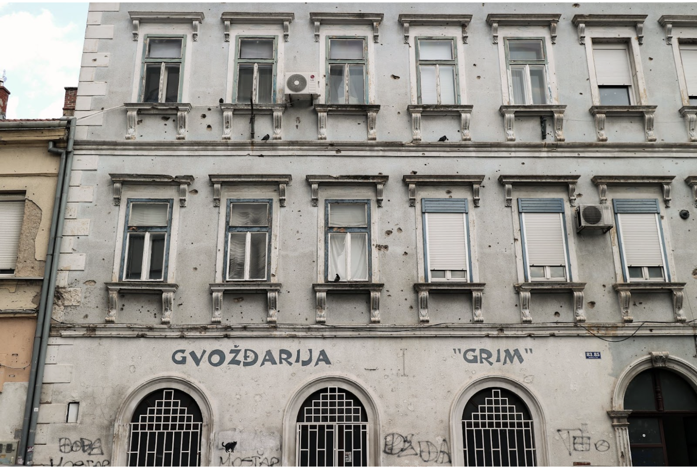

Introduction: A Country Built on Memory
The war in Bosnia and Herzegovina left deep scars in its society, visible through its urban fabric. As Yugoslavia disintegrated, long-standing multi-ethnic communities fractured along nationalist lines.
What followed was one of Europe's most devastating conflicts since World War II, with over 100,000 people killed, two million displaced and entire towns and cities destroyed. The war tore through everyday life, not only with violence, but by dismantling the delicate social fabric that once held diverse communities together.

Building in Mostar pockmarked with bullet holes, left unrepaired.
Nearly three decades later, Bosnia and Herzegovina remains a post-conflict society, grappling with how to confront and remember its traumatic past. Nowhere is this more palpable than in the urban environments of Sarajevo and Mostar. These two cities experienced some of the war's most visible destruction and now serve as open-air archives of its legacy. Buildings are still pockmarked by bullet holes and explosives, some even partially destroyed and left to decay. Monuments have also been erected in silence or controversy. The architecture in Bosnia and Herzegovina tells a complex story of survival, loss and contested memory.
This blog explores how architecture serves as a tool of remembrance in post-war Bosnia and Herzegovina. It draws on the framework of French historian Pierre Nora, who introduced the idea of lieux de mémoire, or sites of memory. According to Nora, when societies can no longer rely on lived communal memory because of rupture, trauma or generational distance, they begin to embed memory in material forms such as buildings, ruins, memorials and symbolic spaces. In Bosnia and Herzegovina, narratives of the past remain politically sensitive and divided, hence the built-environment becomes the primary medium in which memory is preserved, negotiated or even suppressed and erased.
Cities as Living Archives
Everyday structures silently bear witness to suffering. Apartment blocks marked by bullet holes, cemeteries occupying former parks and subtle memorials tucked between shops and cafes. At the same time, memories have also been erased, such as Sniper Alley which saw 225 people killed, now lined with modern developments and shopping centres, highlighting the tension between remembrance and erasure.
The destruction and later reconstruction of the iconic Stari Most (Old Bridge) has come to symbolise both the deep divisions caused by war and the attempts of reconciliation.
Critical Questions
🏗️
What is chosen for preservation?
🗑️
What is allowed to be forgotten?
Framework: Three Central Ideas
This blog is structured around three central ideas:
Examining how war-damaged buildings, ruins and urban divisions serve as silent testimonies to violence.
Bullet holes
Ruins
Urban divisions
Exploring how urban redevelopment and political agendas can obscure or overwrite difficult histories.
Redevelopment
Political agendas
Overwritten histories
Highlighting efforts where architecture and urbanity are utilised to heal division and rebuild community.
Healing spaces
Community rebuilding
Shared spaces
🏛️
By looking at how memory lives on in the physical spaces of Sarajevo and Mostar, this blogpost considers architecture not just as a building or shelter, but as political and social actors that continue to shape how the past is remembered and how the future is envisioned for reconciliation and development.